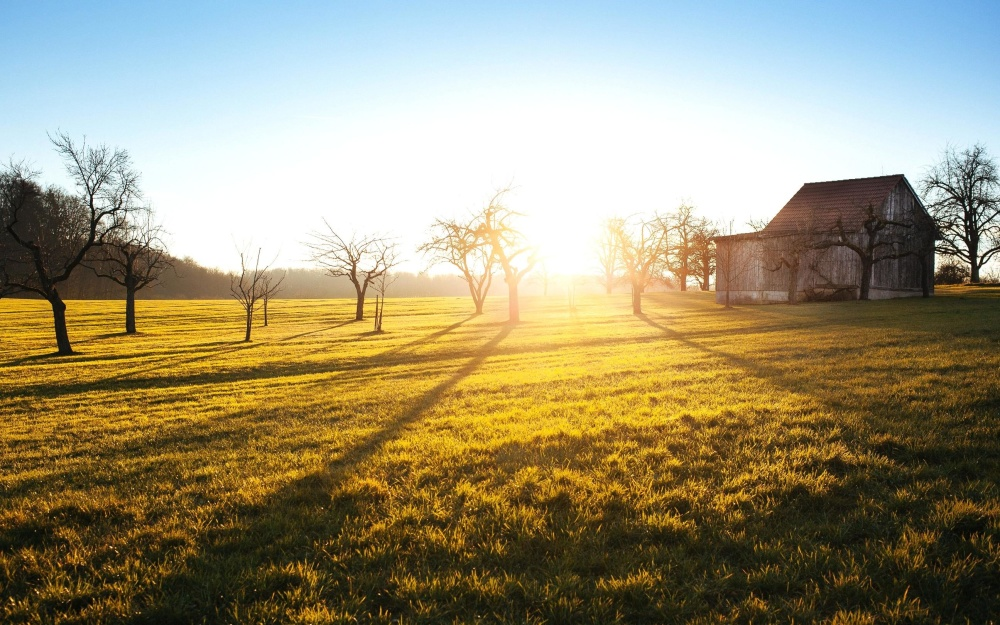

Projeto agrinho-Campo da Camila
O campo é um lugar marcado pela tranquilidade e pelo contato direto com a natureza. Longe do agito das cidades, oferece um ambiente calmo, onde se pode ouvir o canto dos pássaros e sentir o aroma das flores e da terra molhada. No campo, a vida segue um ritmo mais lento, acompanhado pelas estações do ano e pelas atividades rurais. É comum encontrar plantações, pastos e animais como vacas, galinhas e cavalos. As pessoas que vivem ali geralmente trabalham com agricultura ou pecuária, produzindo alimentos que abastecem as cidades. O céu estrelado à noite e os belos amanheceres são atrações à parte. Crianças podem brincar ao ar livre, correr pelos campos e explorar a natureza. O campo também é um ótimo lugar para descansar e renovar as energias. Ele nos lembra da importância de cuidar da terra e valorizar a simplicidade da vida.

Vida no campoA vida no campo é serena e cheia de beleza natural. O dia começa com o cantar dos pássaros e o cheiro da terra fresca. As atividades são ligadas à lavoura, aos animais e ao cuidado com a natureza. Tudo acontece em um ritmo mais lento, longe da correria urbana. As pessoas vivem de forma simples, aproveitando o sossego, o céu estrelado e a liberdade de estar ao ar livre.